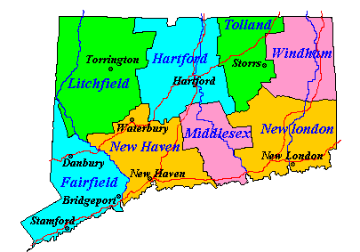
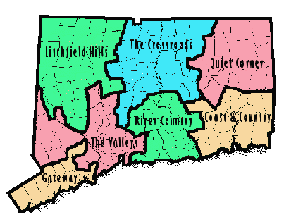

Geographic Information 
Atlantic Vacation Guide by County 
(Click on the maps for detailed information.)
Connecticut Maps
Vicinity Corporation's MapBlast!
Connecticut Road Map (1000X730)
Beautiful Connecticut Topo Maps
Department of Transportation - Highway Construction Sites
Everything You Ever Wanted To Know About
Connecticut Highways
Connecticut Department of Transporation
Road and Travel Information
| Lycos City Guides for Connecticut | |
| Bridgeport | Bristol |
| Danbury | Hartford |
| New Britain | New Haven |
| New London | Norwalk |
| Stamford | Waterbury |
| Connecticut Places of Interest | |
 Seafood on the Pier at Abbott's in Noank Harbor (Click the Pic for complete picture) | |
|
Connecticut Tourism Guide Tourism in Connecticut Connecticut State Parks ImBored - New England Activities Southeastern Connecticut Guide William H. Gillette and the Castle |
Mark Twain House Wadsworth Atheneum Mystic Seaport Museum Mystic Marinelife Aquarium Lime Rock Park Race Track Foxwoods Resort Casino Connecticut Casinos |
Connecticut Speed Traps
If you are a fan of the 55 MPH speed limit and believe that the cops
are out there to protect you, skip this page. You won't like it.
 Connecticut Speed Trap Page
Connecticut Speed Trap Page
Found a Great Site that I missed?
Please let me know about it.
Please don't forget to sign the


This Page Has Been Validated (Except for the Table Colors)
For Use With:


Netscape Navigator 3.0 - Microsoft Internet Explorer - HTML Version 3.2